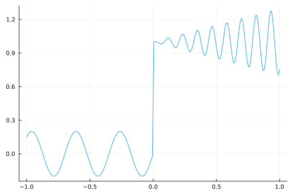
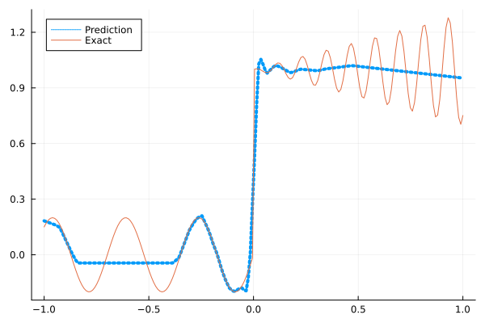
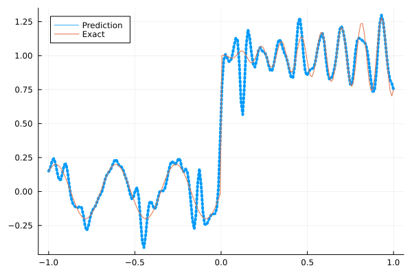
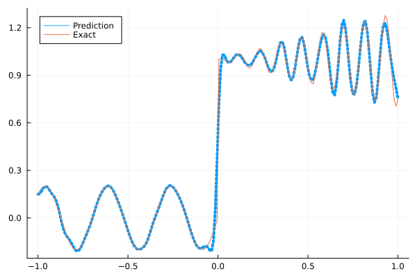
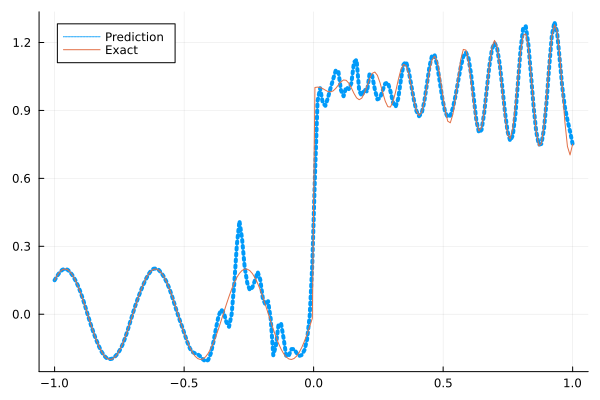
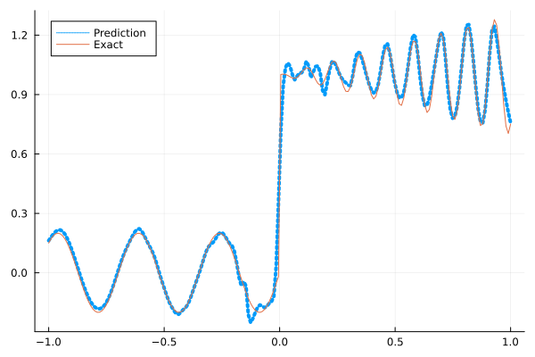

Fitting a nonlinear discontinuous function
This example is taken from here. However, we do not use adaptive activation functions. Instead, we show that using suitable non-parametric activation functions immediately performs better.
Consider the following discontinuous function with discontinuity at $x=0$:
\[u(x)= \begin{cases}0.2 \sin (18 x) & \text { if } x \leq 0 \\ 1+0.3 x \cos (54 x) & \text { otherwise }\end{cases}\]
The domain is $[-1,1]$. The number of training points used is 50.
Import pacakges
using Lux, Sophon
using NNlib, Optimisers, Plots, Random, StatsBase, ZygoteDataset
function u(x)
if x <= 0
return 0.2 * sin(18 * x)
else
return 1 + 0.3 * x * cos(54 * x)
end
end
function generate_data(n=50)
x = reshape(collect(range(-1.0f0, 1.0f0, n)), (1, n))
y = u.(x)
return (x, y)
endgenerate_data (generic function with 2 methods)Let's visualize the data.
x_train, y_train = generate_data(50)
x_test, y_test = generate_data(200)
Plots.plot(vec(x_test), vec(y_test),label=false)
Naive Neural Nets
First we demonstrate show naive fully connected neural nets could be really bad at fitting this function.
model = FullyConnected((1,50,50,50,50,1), relu)Chain(
layer_1 = Dense(1 => 50, relu), # 100 parameters
layer_2 = Dense(50 => 50, relu), # 2_550 parameters
layer_3 = Dense(50 => 50, relu), # 2_550 parameters
layer_4 = Dense(50 => 50, relu), # 2_550 parameters
layer_5 = Dense(50 => 1), # 51 parameters
) # Total: 7_801 parameters,
# plus 0 states, summarysize 80 bytes.Train the model
function train(model, x, y)
ps, st = Lux.setup(Random.default_rng(), model)
opt = Adam()
st_opt = Optimisers.setup(opt,ps)
function loss(model, ps, st, x, y)
y_pred, _ = model(x, ps, st)
mes = mean(abs2, y_pred .- y)
return mes
end
for i in 1:2000
gs = gradient(p->loss(model,p,st,x,y), ps)[1]
st_opt, ps = Optimisers.update(st_opt, ps, gs)
if i % 100 == 1 || i == 2000
println("Epoch $i || ", loss(model,ps,st,x,y))
end
end
return ps, st
endtrain (generic function with 1 method)Plot the result
@time ps, st = train(model, x_train, y_train)
y_pred = model(x_test,ps,st)[1]
Plots.plot(vec(x_test), vec(y_pred),label="Prediction",line = (:dot, 4))
Plots.plot!(vec(x_test), vec(y_test),label="Exact",legend=:topleft)Epoch 1 || 1.128921237007812
Epoch 101 || 0.017151943854713757
Epoch 201 || 0.015797377814818537
Epoch 301 || 0.015600720786204598
Epoch 401 || 0.01541803114785681
Epoch 501 || 0.015152163486372711
Epoch 601 || 0.01467985679173724
Epoch 701 || 0.013866457023494632
Epoch 801 || 0.013144391805789777
Epoch 901 || 0.012631986083833343
Epoch 1001 || 0.012389918913867554
Epoch 1101 || 0.012312870607776678
Epoch 1201 || 0.01224687912992096
Epoch 1301 || 0.012231561873411416
Epoch 1401 || 0.012244481086238528
Epoch 1501 || 0.012197313208253284
Epoch 1601 || 0.012192548499206514
Epoch 1701 || 0.01219172848680256
Epoch 1801 || 0.01218460487819896
Epoch 1901 || 0.012171514972929594
Epoch 2000 || 0.012162931382289742
11.974234 seconds (15.38 M allocations: 1.471 GiB, 2.72% gc time, 94.29% compilation time)
Siren
We use four hidden layers with 50 neurons in each.
model = Siren(1,50,50,50,50,1; omega = 30f0)Chain(
layer_1 = Dense(1 => 50, sin), # 100 parameters
layer_2 = Dense(50 => 50, sin), # 2_550 parameters
layer_3 = Dense(50 => 50, sin), # 2_550 parameters
layer_4 = Dense(50 => 50, sin), # 2_550 parameters
layer_5 = Dense(50 => 1), # 51 parameters
) # Total: 7_801 parameters,
# plus 0 states, summarysize 88 bytes.@time ps, st = train(model, x_train, y_train)
y_pred = model(x_test,ps,st)[1]
Plots.plot(vec(x_test), vec(y_pred),label="Prediction",line = (:dot, 4))
Plots.plot!(vec(x_test), vec(y_test),label="Exact",legend=:topleft)Epoch 1 || 1.805793029288231
Epoch 101 || 0.0014544393935283517
Epoch 201 || 0.00016314055623239135
Epoch 301 || 2.076098588613322e-5
Epoch 401 || 2.900345353097398e-6
Epoch 501 || 3.783456368823535e-7
Epoch 601 || 4.3019315515141544e-8
Epoch 701 || 4.025836691339477e-9
Epoch 801 || 3.0126523490204683e-10
Epoch 901 || 2.1282347765691742e-11
Epoch 1001 || 2.1636237063182125e-12
Epoch 1101 || 3.0935013073884425e-13
Epoch 1201 || 1.2529988376931342e-13
Epoch 1301 || 5.157646957893976e-14
Epoch 1401 || 6.862260878999291e-14
Epoch 1501 || 3.1010469389656616e-14
Epoch 1601 || 5.637124018761658e-14
Epoch 1701 || 4.00961190947788e-14
Epoch 1801 || 3.8995183841891026e-14
Epoch 1901 || 4.0279293943766303e-14
Epoch 2000 || 5.0734018925705393e-14
4.655956 seconds (5.84 M allocations: 1.097 GiB, 3.78% gc time, 82.68% compilation time)
As we can see the model overfits the data, and the high frequencies cannot be optimized away. We need to tunning the hyperparameter omega
model = Siren(1,50,50,50,50,1; omega = 10f0)Chain(
layer_1 = Dense(1 => 50, sin), # 100 parameters
layer_2 = Dense(50 => 50, sin), # 2_550 parameters
layer_3 = Dense(50 => 50, sin), # 2_550 parameters
layer_4 = Dense(50 => 50, sin), # 2_550 parameters
layer_5 = Dense(50 => 1), # 51 parameters
) # Total: 7_801 parameters,
# plus 0 states, summarysize 88 bytes.@time ps, st = train(model, x_train, y_train)
y_pred = model(x_test,ps,st)[1]
Plots.plot(vec(x_test), vec(y_pred),label="Prediction",line = (:dot, 4))
Plots.plot!(vec(x_test), vec(y_test),label="Exact",legend=:topleft)Epoch 1 || 0.9637356157417171
Epoch 101 || 0.007038664817917786
Epoch 201 || 0.005041514488409675
Epoch 301 || 0.003911409118143824
Epoch 401 || 0.003134238705907334
Epoch 501 || 0.002444785507668429
Epoch 601 || 0.0017090369054297094
Epoch 701 || 0.0009878495194217505
Epoch 801 || 0.0004837432862831981
Epoch 901 || 0.00024409207520400763
Epoch 1001 || 0.00014560910031571377
Epoch 1101 || 0.00010183400875121216
Epoch 1201 || 7.941964476868513e-5
Epoch 1301 || 6.646820992703347e-5
Epoch 1401 || 5.832530060991996e-5
Epoch 1501 || 5.2803099864317454e-5
Epoch 1601 || 4.873977550771297e-5
Epoch 1701 || 4.5489193336862596e-5
Epoch 1801 || 4.2693789974937874e-5
Epoch 1901 || 4.0153167271692964e-5
Epoch 2000 || 3.7779842169549496e-5
0.782300 seconds (855.04 k allocations: 786.337 MiB, 9.95% gc time)
Gaussian activation function
We can also try using a fully connected net with the gaussian activation function.
model = FullyConnected((1,50,50,50,50,1), gaussian)Chain(
layer_1 = Dense(1 => 50, gaussian), # 100 parameters
layer_2 = Dense(50 => 50, gaussian), # 2_550 parameters
layer_3 = Dense(50 => 50, gaussian), # 2_550 parameters
layer_4 = Dense(50 => 50, gaussian), # 2_550 parameters
layer_5 = Dense(50 => 1), # 51 parameters
) # Total: 7_801 parameters,
# plus 0 states, summarysize 80 bytes.@time ps, st = train(model, x_train, y_train)
y_pred = model(x_test,ps,st)[1]
Plots.plot(vec(x_test), vec(y_pred),label="Prediction",line = (:dot, 4))
Plots.plot!(vec(x_test), vec(y_test),label="Exact",legend=:topleft)Epoch 1 || 0.2838559799926944
Epoch 101 || 0.005007351229653667
Epoch 201 || 0.0033681859819555916
Epoch 301 || 0.0004392864214475592
Epoch 401 || 1.1624864431267361e-5
Epoch 501 || 7.585782442149213e-7
Epoch 601 || 1.1970949856705037e-5
Epoch 701 || 1.0158940567854573e-8
Epoch 801 || 2.4695604822852905e-10
Epoch 901 || 1.5696953271053553e-6
Epoch 1001 || 6.304947670889561e-10
Epoch 1101 || 8.162000669393783e-12
Epoch 1201 || 3.0975983436507004e-13
Epoch 1301 || 2.5079755682841386e-12
Epoch 1401 || 2.1098140238550034e-6
Epoch 1501 || 2.804543043774307e-10
Epoch 1601 || 2.725258469439291e-13
Epoch 1701 || 2.7467765995324314e-14
Epoch 1801 || 6.966144729727799e-14
Epoch 1901 || 7.070125962349882e-14
Epoch 2000 || 4.9785095926076104e-14
4.797972 seconds (6.65 M allocations: 1.137 GiB, 3.18% gc time, 84.34% compilation time)
Quadratic activation function
quadratic is much cheaper to compute compared to the Gaussain activation function.
model = FullyConnected((1,50,50,50,50,1), quadratic)Chain(
layer_1 = Dense(1 => 50, quadratic), # 100 parameters
layer_2 = Dense(50 => 50, quadratic), # 2_550 parameters
layer_3 = Dense(50 => 50, quadratic), # 2_550 parameters
layer_4 = Dense(50 => 50, quadratic), # 2_550 parameters
layer_5 = Dense(50 => 1), # 51 parameters
) # Total: 7_801 parameters,
# plus 0 states, summarysize 80 bytes.@time ps, st = train(model, x_train, y_train)
y_pred = model(x_test,ps,st)[1]
Plots.plot(vec(x_test), vec(y_pred),label="Prediction",line = (:dot, 4))
Plots.plot!(vec(x_test), vec(y_test),label="Exact",legend=:topleft)Epoch 1 || 0.3066004124033389
Epoch 101 || 0.006753090417845471
Epoch 201 || 0.005991601345085726
Epoch 301 || 0.00564032160697278
Epoch 401 || 0.0051910833256013774
Epoch 501 || 0.005153598863046815
Epoch 601 || 0.00427812961140983
Epoch 701 || 0.0032165878559113383
Epoch 801 || 0.002372808323165493
Epoch 901 || 0.0006312277674215016
Epoch 1001 || 0.00015067194450385716
Epoch 1101 || 0.00016443230240388476
Epoch 1201 || 4.419046159728889e-5
Epoch 1301 || 8.504623517435597e-5
Epoch 1401 || 6.952635971911041e-7
Epoch 1501 || 1.4046293861500863e-6
Epoch 1601 || 1.7546842973224856e-6
Epoch 1701 || 5.68925574603555e-7
Epoch 1801 || 6.737548885446418e-7
Epoch 1901 || 1.0044952671835363e-6
Epoch 2000 || 3.841167371930927e-6
4.178107 seconds (5.77 M allocations: 1.092 GiB, 3.22% gc time, 86.18% compilation time)
Conclusion
"Neural networks suppresse high frequency components" is a misinterpretation of the spectral bias. The accurate way of putting it is that the lower frequencies in the error are optimized first in the optimization process. This can be seen in Siren's example of overfitting data, where you do not have implicit regularization. The high frequency in the network will never go away because it has fitted the data perfectly.
Mainstream attributes the phenomenon that neural networks "suppress" high frequencies to gradient descent. This is not the whole picture. Initialization also plays an important role. Siren mitigats this problem by initializing larger weights in the first layer, while activation functions such as gassian have large enough gradients and sufficiently large support of the second derivative with proper hyperparameters. Please refer to Vincent Sitzmann, Julien Martel, Alexander Bergman, David Lindell, Gordon Wetzstein (2020), Sameera Ramasinghe, Simon Lucey (2021) and Sameera Ramasinghe, Lachlan MacDonald, Simon Lucey (2022) if you want to dive deeper into this.